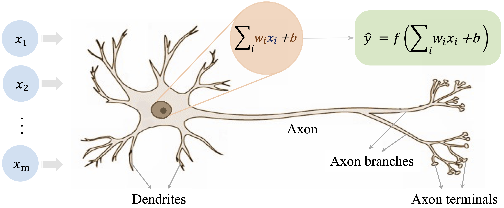
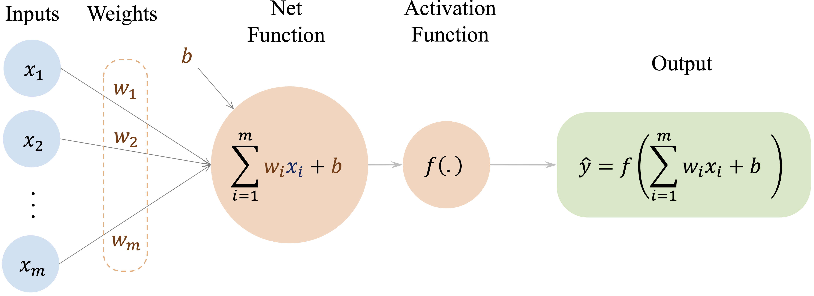
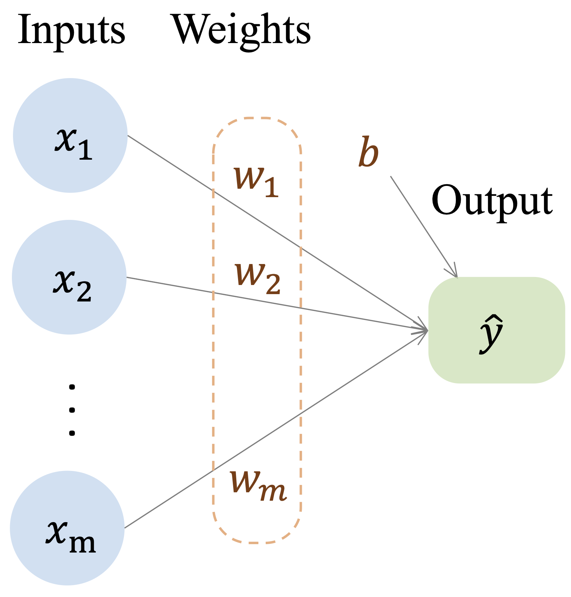
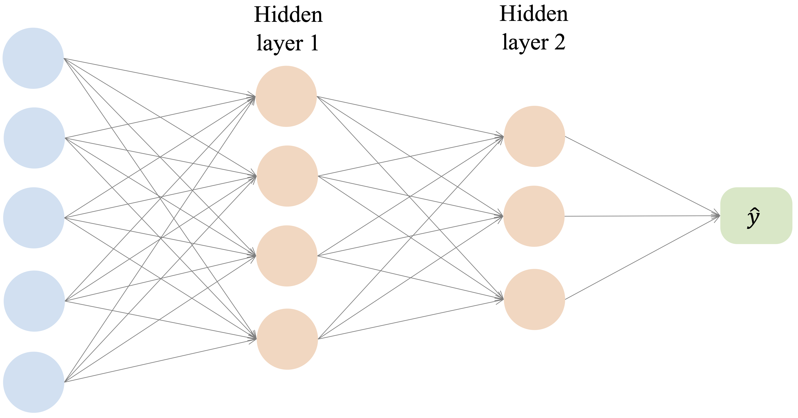
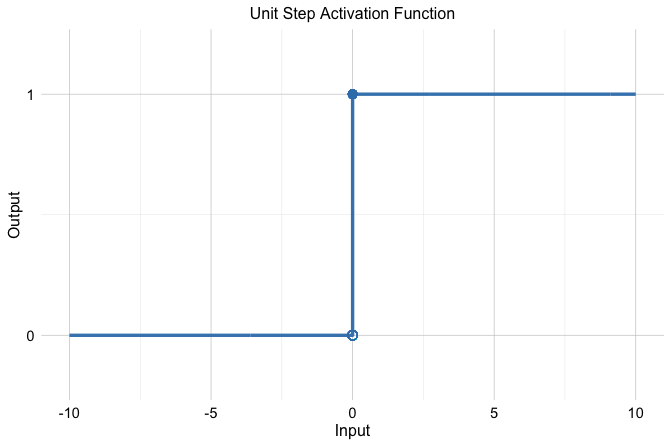
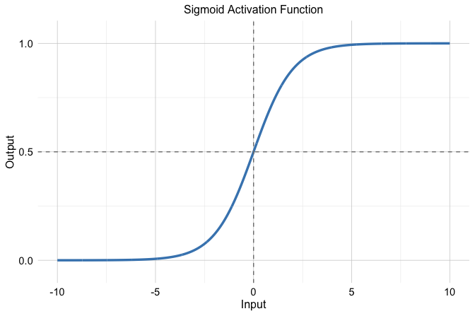
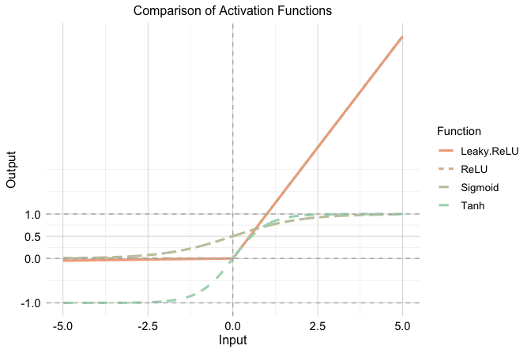
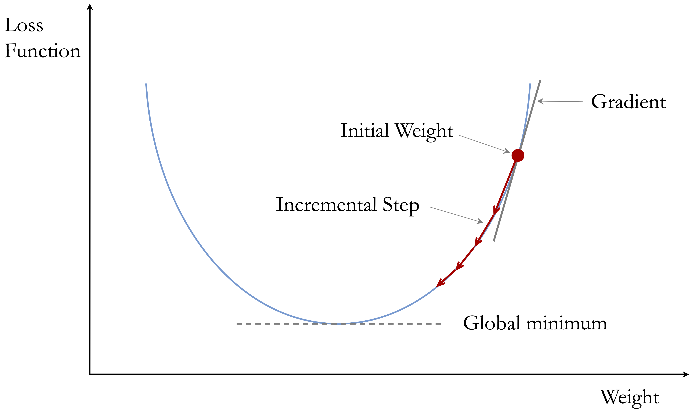
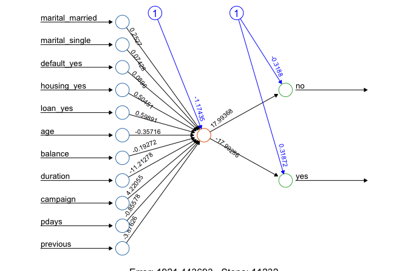
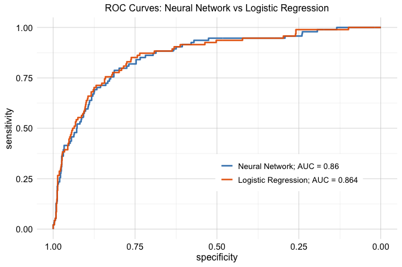

11 Neural Networks for Supervised Learning
The Brain — is wider than the Sky —
Can a model learn patterns that are too complex for linear regression or other simpler methods to capture well? Neural networks provide one answer to this question. By combining weighted connections, hidden layers, and nonlinear activation functions, they can learn flexible relationships between predictors and outcomes from data.
In this chapter, we focus on feed-forward neural networks, also called multilayer perceptrons (MLPs). These models are among the most accessible neural network architectures and provide a practical introduction to how neural networks operate. They are especially useful for supervised learning problems in which relationships are nonlinear or involve interactions that are difficult to specify in advance.
Our goal is not to survey artificial intelligence broadly or to cover advanced deep learning architectures in detail. Instead, we introduce the main ideas behind MLPs and show how they can be applied in R to classification and regression problems. This narrower focus allows us to develop conceptual understanding and practical modeling skills while keeping the discussion appropriate for tabular data.
The flexibility of neural networks comes from passing information through one or more hidden layers, where weighted combinations of the inputs are transformed by nonlinear activation functions. This allows the model to learn relationships that are more complex than those represented by a single linear combination of predictors. The added flexibility, however, comes with trade-offs: neural networks are typically less interpretable than models such as linear regression or decision trees and often require more careful preprocessing, tuning, and evaluation.
This chapter continues the Modeling stage of the Data Science Workflow introduced in Chapter 1. Earlier chapters introduced classification methods, established statistical foundations for estimation and uncertainty, developed regression models for continuous, binary, and count outcomes, and then moved to flexible tree-based methods that can capture nonlinear relationships without prespecifying a functional form. Neural networks extend this progression by providing another flexible supervised learning approach for both classification and regression, using layered nonlinear transformations to learn complex patterns from data.
What This Chapter Covers
This chapter introduces multilayer perceptrons as a supervised learning approach for tabular data in R. The emphasis is on understanding how these models are structured, how they learn from data, and how they can be trained and evaluated in applied settings.
By the end of this chapter, you should understand the basic structure of a neural network, including input, hidden, and output layers, and how weights, bias terms, and activation functions work together to produce predictions. You should also understand the basic ideas behind loss functions, gradient-based optimization, backpropagation, and training choices such as the learning rate and network architecture. Finally, you should be able to prepare data, train a simple neural network, generate predictions, and evaluate its performance for a supervised learning task in R.
The chapter begins with the biological motivation for neural networks and then examines artificial neurons, activation functions, network architecture, and the learning process. It concludes with a case study using the real-world bank dataset to illustrate how a multilayer perceptron can be prepared, trained, and evaluated in practice. Exercises at the end of the chapter reinforce the main ideas and extend the methods to additional classification and regression problems.
11.1 The Biological Inspiration Behind Neural Networks
How can a computational model learn from data without being explicitly programmed with a long set of decision rules? One influential answer comes from neural networks, which were originally inspired by biological information processing, especially the way neurons interact within the brain.
Biological neurons are the basic information-processing units of the nervous system. Each neuron receives signals from other neurons, combines them, and may transmit an output signal if its level of activation is sufficiently strong. Learning and cognition do not arise from a single neuron acting in isolation, but from the collective behavior of many interconnected neurons. The human brain contains on the order of \(10^{11}\) neurons linked through synapses, forming an extraordinarily rich system for processing information.
Figure 11.1 illustrates the basic structure of a biological neuron. Signals are received through dendrites, combined in the cell body, and transmitted along the axon when activation exceeds a threshold.
Artificial neural networks are simplified computational models that borrow a few core ideas from this biological picture. They do not attempt to reproduce the full complexity of the brain. Instead, they abstract three central ideas: information is processed through interconnected units, connections can vary in strength, and signals can be transformed in a nonlinear way. These abstractions make neural networks flexible enough to learn complex relationships from data while remaining mathematically and computationally manageable.
This abstraction leads to the artificial neuron shown in Figure 11.2. In its simplest form, an artificial neuron receives input features (\(x_i\)), multiplies them by adjustable weights (\(w_i\)), adds a bias term, and then applies an activation function \(f(\cdot)\) to produce an output (\(\hat{y}\)).

This analogy should be understood as a source of intuition rather than a literal description of how modern neural networks operate. Its value lies in showing how complex behavior can emerge from many simple units connected in a network. In the next section, we move from this biological motivation to a more formal description of how neural networks are structured and how they produce predictions.
11.2 How Neural Networks Work
Neural networks build directly on ideas introduced earlier in regression modeling, but they extend them in a way that allows much richer relationships between predictors and outcomes to be represented. In Chapter 8, we saw that a linear regression model predicts an outcome as a weighted sum of input features: \[ \hat{y} = b_0 + b_1 x_1 + b_2 x_2 + \dots + b_m x_m, \] where \(m\) denotes the number of predictors, \(b_0\) is the intercept, and \(b_1, \dots, b_m\) are regression coefficients. This formulation can be viewed as a simple computational network in which the input features are connected directly to the output through weighted connections, as illustrated in Figure 11.3.

This representation highlights both the strength and the limitation of linear models. They are interpretable and efficient, but they assume that predictors contribute to the outcome through a single linear combination. As a result, they do not naturally capture complex nonlinear relationships or interactions unless these are introduced explicitly by the analyst.
Neural networks generalize this idea by inserting one or more layers of artificial neurons between the input and output. Instead of mapping predictors directly to the final response, the model first transforms the inputs into intermediate features and then combines those features to produce a prediction. A typical multilayer network is shown in Figure 11.4.

A feed-forward neural network consists of three types of layers. The input layer receives the predictor variables, one or more hidden layers transform these inputs through weighted connections and activation functions, and the output layer produces the final prediction. Information flows in one direction, from the input layer through the hidden layer or layers to the output layer.
To see this more clearly, consider a neural network with one hidden layer. Each hidden neuron first computes a weighted sum of the inputs and then applies an activation function. If we let \(h_j\) denote the output of hidden neuron \(j\), then \[ h_j = g\left( w_{j0} + \sum_{i=1}^{m} w_{ji} x_i \right), \qquad j = 1, \dots, H, \] where \(x_1, \dots, x_m\) are the input features, \(w_{ji}\) are weights, \(w_{j0}\) is a bias term, \(g(\cdot)\) is the hidden-layer activation function, and \(H\) is the number of hidden neurons.
In the second stage, the output layer combines these hidden activations to produce the final prediction. For a network with a single output node, this can be written as \[ \hat{y} = f\left( v_0 + \sum_{j=1}^{H} v_j h_j \right), \] where \(v_j\) are output-layer weights, \(v_0\) is an output-layer bias term, and \(f(\cdot)\) is the activation function used at the output layer. In other settings, the output layer may contain more than one node, for example in multi-class classification or multi-output prediction problems.
This two-stage structure shows what makes neural networks more flexible than linear regression. The hidden layer creates intermediate representations of the predictors, and the output layer then combines these learned representations to form the final prediction. When nonlinear activation functions are used, the network can represent relationships that are not available to a purely linear model.
This perspective also clarifies the connection with logistic regression. Logistic regression can be viewed as a neural network with no hidden layer and a single sigmoid output unit. In that case, the model still computes a weighted sum of the input features, but the final output is passed through the sigmoid function so that it can be interpreted as a probability.
Although neural network architectures can vary widely, three ideas are central to how they work. First, activation functions allow the model to introduce nonlinear transformations rather than relying only on linear combinations of the predictors. Second, the architecture of the network, including the number of hidden layers and neurons, determines how much complexity the model can represent. Third, the network learns by adjusting its weights and bias terms so that its predictions better match the observed data.
Taken together, these ideas explain why neural networks can model complex patterns while still building on the same basic logic as regression: inputs are combined through weights to produce predictions, but the introduction of hidden layers and nonlinear transformations greatly increases the range of relationships that can be learned. In the following sections, we examine these components in more detail, beginning with activation functions and their role in enabling nonlinear modeling.
11.3 Activation Functions
Activation functions determine how signals are transformed as they pass from one layer of a neural network to the next. Their main purpose is to introduce nonlinearity. Without this step, even a deep network would reduce to a sequence of linear transformations, and adding layers would not meaningfully increase the complexity of the relationships the model could represent.
Activation functions differ in properties such as output range, smoothness, and gradient behavior, and these differences influence both training and predictive performance. Some activation functions are now mainly of historical interest, whereas others play a central role in modern neural networks. In this section, we examine the most important examples and highlight the practical considerations that guide their use.
From Threshold to Sigmoid
One of the earliest activation functions is the threshold function, inspired by the all-or-nothing firing behavior of biological neurons. It produces a binary output: \[ f(x) = \begin{cases} 1 & \text{if } x \geq 0, \\ 0 & \text{if } x < 0. \end{cases} \] This step-like behavior is illustrated in Figure 11.5. The threshold function played an important historical role in early neural models such as the perceptron, but it is not used in modern neural networks.

The main limitation of the threshold function is that it does not work well with gradient-based learning. Its derivative is undefined at the threshold and zero everywhere else, so it does not provide the gradient information needed for backpropagation. In addition, its binary output is too rigid to represent gradual changes in activation.
A smooth alternative is the sigmoid activation function, also called the logistic function. Instead of switching abruptly from 0 to 1, it changes gradually and maps any real-valued input to the interval \((0, 1)\): \[ f(x) = \frac{1}{1 + e^{-x}}. \] Its S-shaped curve is shown in Figure 11.6.

The sigmoid function is especially important in binary classification because its output lies between 0 and 1 and can therefore be interpreted as a probability. It also connects directly to logistic regression, which can be viewed as a neural network with no hidden layer and a single sigmoid output unit.
Despite this improvement, sigmoid also has limitations. For large positive or negative inputs, the curve becomes nearly flat, so the gradient becomes very small. As a result, weight updates based on backpropagation can also become very small, which may slow learning, especially in deeper networks. For that reason, sigmoid is typically most useful in output layers for binary classification rather than in hidden layers.
Common Activation Functions in Modern Neural Networks
Although threshold and sigmoid functions are historically important, modern neural networks usually rely on activation functions with more favorable optimization behavior, especially in hidden layers. Three widely used examples are tanh, ReLU, and Leaky ReLU.
The hyperbolic tangent, or tanh, maps inputs to the interval \((-1, 1)\). Like sigmoid, it is smooth and differentiable, but unlike sigmoid it is zero-centered, which can support more stable optimization in hidden layers. Its main limitation is that it can still saturate when inputs become very large in magnitude, leading to small gradients.
The Rectified Linear Unit, or ReLU, is defined as \[ f(x) = \max(0, x). \] It is computationally simple and has a constant gradient for positive inputs. These properties help reduce the vanishing-gradient problem and explain why ReLU became a standard choice in many neural network architectures. Its main weakness is that a neuron can become inactive if its input remains negative, producing zero output and zero gradient.
Leaky ReLU modifies ReLU by allowing a small nonzero slope when the input is negative: \[ f(x) = \begin{cases} x & \text{if } x \geq 0, \\ \alpha x & \text{if } x < 0, \end{cases} \] where \(\alpha\) is a small positive constant, often chosen as 0.01. This adjustment reduces the risk of permanently inactive neurons while preserving the simplicity and efficiency that make ReLU attractive.
Figure 11.7 compares the shapes of the sigmoid, tanh, ReLU, and Leaky ReLU activation functions.

These functions differ not only in shape but also in practical role. In the tabular supervised learning setting considered in this chapter, hidden layers are often built using ReLU or a related variant such as Leaky ReLU because these functions are simple, efficient, and usually support stable optimization. Tanh remains a reasonable alternative when a smooth, zero-centered activation is desired, although it is used less often in contemporary practice. For the output layer, the activation function should match the prediction task: sigmoid is natural for binary classification because it produces values in \((0, 1)\) that can be interpreted as probabilities, whereas regression models typically use a linear output activation so that predictions are not artificially restricted. In multiclass classification, the output layer often contains one node per class together with a softmax-type transformation that converts outputs into class probabilities. No single activation function is uniformly best, and in practice the choice should be made in light of the task, the architecture, and the behavior of the optimization procedure.
11.4 Network Architecture: Layers, Capacity, and Design Choices
The performance of a neural network depends not only on how it is trained, but also on how it is structured. This structure, known as the network architecture, determines how information flows through the model and how complex the learned relationships can become.
A neural network’s architecture is defined by the arrangement of neurons and the connections between them. Three aspects are especially important: the number of layers, the number of neurons within each layer, and the pattern of connectivity between layers. Together, these choices determine the model’s capacity to represent patterns in the data.
To illustrate the role of architecture, consider the simple network shown earlier in Figure 11.3. This model consists of input nodes connected directly to output nodes through weighted connections. Such a single-layer structure is sufficient for linear regression and closely related models, including logistic regression with a sigmoid output unit, but it cannot by itself represent richer nonlinear relationships or interactions among features.
Neural networks overcome this limitation by introducing one or more hidden layers, as illustrated in Figure 11.4. Hidden layers apply successive transformations to the data, allowing the model to construct intermediate representations before producing a final prediction. A typical multilayer perceptron therefore consists of an input layer, one or more hidden layers, and an output layer.
In fully connected networks, each neuron in a layer is connected to every neuron in the next layer. These connections are associated with weights that are learned from data during training. By stacking layers and combining them with activation functions, the network can represent complex nonlinear functions through a sequence of simpler transformations.
The number of neurons in each layer plays a central role. The number of input nodes is determined by the number of predictors, and the number of output nodes depends on the task, such as one node for regression, one sigmoid output node for binary classification, or one node per class in a multi-class problem. In contrast, the number of hidden neurons is a modeling choice. Increasing this number expands the expressive capacity of the network, but it also increases computational cost and the risk of overfitting.
These considerations are especially important for tabular data, which is the focus of this chapter. In many tabular supervised learning problems, very deep networks are not automatically better than shallow ones. Because the number of predictors is often modest and the structure of the data is less hierarchical than in images or language, small or moderately sized multilayer perceptrons can already provide useful flexibility without introducing unnecessary complexity.
For this reason, the case study later in the chapter uses a small multilayer perceptron. This choice is made for clarity and teachability, not because a small network is always optimal. A compact architecture makes it easier to see how preprocessing, hidden layers, activation functions, and evaluation fit together within the Data Science Workflow. In practice, more complex architectures may sometimes improve performance, but they also require more careful tuning and more careful control of overfitting.
Choosing an appropriate architecture therefore involves balancing model complexity and generalization. A network that is too simple may underfit important structure in the data, whereas a network that is too large may fit noise rather than signal. Regularization methods such as weight decay or dropout can help reduce this risk, and validation-based comparison is often used to decide whether added complexity actually improves out-of-sample performance.
This section has focused on fully connected multilayer perceptrons, which form the foundation of the neural network models studied in this chapter. Other architectures, such as convolutional neural networks for images and recurrent or sequence-based networks for ordered data, build on related ideas but use connectivity patterns designed for different data structures.
Within the Data Science Workflow, architecture selection is part of the modeling stage. Choosing an appropriate network structure determines the model’s capacity and sets the conditions under which learning can proceed effectively.
11.5 How Neural Networks Learn
How does a neural network improve its predictions over time? At the start of training, the network has not yet learned how its parameters should be set to produce accurate predictions. Learning takes place by using prediction error as feedback: the network compares its outputs with observed outcomes and then adjusts its weights and bias terms so that future predictions better match the data.
This process is iterative. Over repeated passes through the data, the network produces predictions, measures the resulting error through a loss function, and updates its parameters to reduce that error. In modern neural networks, this learning process is driven by gradient-based optimization and made computationally feasible by backpropagation.
From Prediction Error to Learning
A neural network learns by using prediction error as feedback. For a given training observation, the inputs are passed through the network, layer by layer, until an output is produced. This step is called the forward pass. The predicted output is then compared with the observed target value using a loss function, which quantifies the discrepancy between the prediction and the observed outcome.
The choice of loss function depends on the task. In regression, a common example is squared error, \[ L = (y - \hat{y})^2, \] which measures how far the prediction \(\hat{y}\) is from the observed value \(y\) for a single observation. Across an entire dataset, these squared errors are added together to form the sum of squared errors. In binary classification, cross-entropy is often more appropriate. In either setting, the loss function converts prediction error into a numerical quantity that training seeks to minimize: poor predictions produce larger loss values, whereas accurate predictions produce smaller ones.
Once this error has been quantified, the next challenge is to determine how each weight and bias term contributed to the loss and how these parameters should be adjusted to improve future predictions. This transition from error measurement to parameter updating is the central idea behind gradient-based optimization.
Gradient Descent
Once a loss function has been defined, the next question is how to reduce it. Gradient descent is the basic optimization method used for this purpose. The gradient of the loss with respect to a parameter tells us how the loss changes when that parameter is adjusted by a small amount. Because the gradient points in the direction of steepest increase, we reduce the loss by moving in the opposite direction.
If \(w\) denotes a weight and \(L\) denotes the loss function, a basic gradient descent update can be written as \[ w^{(t+1)} = w^{(t)} - \eta \frac{\partial L}{\partial w}, \] where \(\eta\) is the learning rate and \(t\) indexes the update step. This expression says that the new value of the weight is obtained by taking the current value and subtracting a correction based on the gradient. The term \(\frac{\partial L}{\partial w}\) measures how strongly the loss depends on the weight \(w\), while the learning rate determines how large the update should be.
To build intuition, Figure 11.8 shows gradient descent in a one-dimensional optimization problem. The horizontal axis represents a single parameter value, and the vertical axis represents the corresponding loss. Starting from an initial parameter value, gradient descent updates the parameter iteratively in the direction that reduces the loss. The arrows indicate the direction of the update at different points along the curve, guiding the parameter toward a minimum of the loss function. Although real neural networks are trained in a high-dimensional parameter space, this simplified example illustrates the basic idea behind gradient-based optimization.

This update is applied repeatedly across the parameters of the network. In practice, training proceeds over multiple passes through the data. One complete pass through the full training set is called an epoch. Over many epochs, the parameters are gradually adjusted so that the loss decreases and the predictions improve. In larger problems, updates are often based on one observation or a small subset of observations at a time, which leads to methods such as stochastic gradient descent and mini-batch gradient descent.
Backpropagation
Gradient descent tells us how to update the weights once the gradients are known. Backpropagation tells us how to compute those gradients efficiently in a multilayer network.
The basic idea is simple: the prediction error is first observed at the output layer, and then that error is propagated backward through the network. This is done using the chain rule of calculus, which traces how a change in one parameter affects the final loss through a sequence of intermediate steps.
To illustrate the idea, consider a network with one hidden layer and a single output node. For hidden neuron \(j\), let \[ a_j = w_{j0} + \sum_{i=1}^{m} w_{ji} x_i, \qquad h_j = g(a_j), \] and let the final prediction be \[ z = v_0 + \sum_{j=1}^{H} v_j h_j, \qquad \hat{y} = f(z). \] Here, \(w_{ji}\) is the weight from input \(x_i\) to hidden neuron \(j\), \(v_j\) is the weight from hidden neuron \(j\) to the output, \(g(\cdot)\) is the hidden-layer activation function, and \(f(\cdot)\) is the output-layer activation function.
Backpropagation works by tracing how the loss depends on each parameter through these intermediate quantities. For a hidden-layer weight \(w_{ji}\), the chain rule gives \[ \frac{\partial L}{\partial w_{ji}} = \frac{\partial L}{\partial \hat{y}} \cdot \frac{\partial \hat{y}}{\partial z} \cdot v_j \cdot g'(a_j) \cdot x_i. \] Although this expression may look technical, its interpretation is straightforward. The gradient depends on five linked components: how the loss changes with the prediction, how the prediction changes with the output-layer input, how strongly hidden unit \(j\) influences the output, how the hidden activation changes with its own input, and how strongly input \(x_i\) contributes to that hidden unit. In other words, the final prediction error is passed backward through the network, and each step scales the contribution of the weight under consideration.
This is the central idea of backpropagation. The algorithm does not guess which weights should change. Instead, it uses the chain rule to determine how strongly each parameter contributed to the loss, allowing the network to update its weights efficiently. The goal here is not to memorize the formula, but to understand what it shows: backpropagation makes gradient-based learning feasible in multilayer neural networks.
Learning Rate and Training Stability
The learning rate \(\eta\) plays a crucial role in training because it controls the size of each parameter update. If \(\eta\) is too large, the updates may be unstable, causing the optimization process to overshoot good solutions or oscillate rather than settle. If \(\eta\) is too small, training may proceed very slowly and require many epochs before the loss decreases meaningfully.
Choosing an appropriate learning rate is therefore an important practical decision. In applied work, it is often treated as a tuning parameter and assessed through validation. A learning rate that is too large may produce erratic changes in the loss or even prevent convergence, whereas a learning rate that is too small may yield a very smooth but frustratingly slow improvement. A well-chosen learning rate typically produces a steady and stable reduction in loss over time.
The broader lesson is that successful neural network training depends not only on the structure of the model, but also on sensible choices in the optimization procedure. In practice, effective learning requires a balance between model design, parameter tuning, and validation-based evaluation.
Momentum
A useful refinement of gradient descent is momentum. Instead of updating parameters solely on the basis of the current gradient, momentum also incorporates part of the previous update. This can smooth the optimization path, reduce oscillation, and help the algorithm move more efficiently across uneven loss surfaces.
The main idea is that the update retains some memory of previous steps. When successive gradients point in a similar direction, momentum can accelerate learning. When the optimization path begins to oscillate, momentum can help dampen unstable back-and-forth movement. In this way, momentum often leads to smoother and more efficient training than basic gradient descent alone.
Many modern optimization methods build on this same idea by adapting learning rates or combining information across successive updates. In this chapter, however, the goal is not to survey optimization algorithms in detail, but to understand the core learning mechanism of neural networks.
Termination Criteria
Training does not continue indefinitely. In practice, neural network training stops once a chosen termination criterion is satisfied. One simple approach is to fix a maximum number of epochs in advance. Another is to stop when the loss changes only negligibly from one epoch to the next, suggesting that the optimization process is approaching convergence.
In applied modeling, it is often more informative to monitor performance on a validation set than to rely only on the training loss. A network may continue to improve its fit to the training data while beginning to overfit, which can reduce performance on new observations. For this reason, a common strategy is early stopping, in which training is halted once validation performance no longer improves. This provides a practical way to balance continued learning against the risk of overfitting.
Termination criteria therefore serve two related purposes: they avoid unnecessary computation and help control overfitting. In practice, stopping rules are chosen together with other training settings, including the learning rate, the number of epochs, and the overall model architecture.
Taken together, these ideas explain how a neural network turns prediction error into learning. With this foundation in place, we now turn to a practical case study that shows how a neural network can be trained and evaluated on real-world data in R.
11.6 Case Study: Predicting Term Deposit Subscriptions
This case study illustrates how neural networks can support data-driven marketing decisions in the financial sector. Using data from a previous telemarketing campaign, we develop a classification model to predict whether a customer will subscribe to a term deposit. The aim is to identify patterns in customer characteristics and campaign-related information that can support more targeted and efficient outreach.
The dataset comes from the UC Irvine Machine Learning Repository and is distributed with the liver package. It was introduced by Moro et al. (2014) in the context of analyzing bank marketing campaigns. The response variable records whether a customer subscribed to a term deposit, while the predictors include a combination of demographic attributes and campaign-related features. This combination makes the dataset well suited for illustrating how multilayer perceptrons can be used in a supervised classification setting.
Following the Data Science Workflow introduced in Chapter 1 and illustrated in Figure 1.1, the case study begins with Problem Understanding and an overview of the dataset, before proceeding through Data Preparation for Modeling, Modeling, and Model Evaluation. Throughout, the emphasis is on sound modeling practice, reproducibility, and the role of neural networks within a broader analytical workflow implemented in R.
Problem Understanding
Financial institutions regularly face the challenge of deciding how to use marketing resources effectively. One important question is which customers are more likely to respond positively to a campaign, so that outreach can be made more selective and efficient.
In practice, marketing strategies range from broad mass campaigns to more targeted, data-driven approaches. Mass campaigns are simple to implement but often produce low response rates. Directed marketing, by contrast, uses predictive models to identify customers with a higher probability of interest. This can improve conversion rates, but it also raises important concerns related to privacy, fairness, and customer trust.
This case study focuses on term deposit subscriptions in the context of bank marketing campaigns. A term deposit is a fixed-term savings product that usually offers a higher interest rate than a standard savings account. From the institution’s perspective, attracting such subscriptions can provide a stable source of funding; from the customer’s perspective, it offers a predictable return over a fixed period. Using data from earlier campaigns, our aim is to estimate the probability that a customer will subscribe to such a product.
From a modeling perspective, this is a binary classification problem: the outcome records whether a customer subscribes to a term deposit or not. The predictors combine customer characteristics with campaign-related information, including the duration of the last contact. Because duration is only observed after a contact has taken place, the model should be interpreted as a campaign-response or benchmark prediction model rather than as a strict pre-contact targeting tool. Within that setting, the practical objective is to use available information to support more selective decision-making while remaining mindful of the broader responsibility to use customer data carefully and appropriately.
Overview of the Dataset
The bank dataset contains information from direct phone-based marketing campaigns conducted by a financial institution. Each observation corresponds to a customer who was contacted during a campaign, and the objective is to predict whether the customer subscribed to a term deposit (deposit = "yes" or "no"). The dataset combines demographic characteristics with information about prior contacts and campaign interactions, making it suitable for supervised classification using neural networks.
We begin by loading the dataset into R and inspecting its structure to understand the types of variables available for modeling:
library(liver)
data(bank)
str(bank)
'data.frame': 4521 obs. of 17 variables:
$ age : int 30 33 35 30 59 35 36 39 41 43 ...
$ job : Factor w/ 12 levels "admin.","blue-collar",..: 11 8 5 5 2 5 7 10 3 8 ...
$ marital : Factor w/ 3 levels "divorced","married",..: 2 2 3 2 2 3 2 2 2 2 ...
$ education: Factor w/ 4 levels "primary","secondary",..: 1 2 3 3 2 3 3 2 3 1 ...
$ default : Factor w/ 2 levels "no","yes": 1 1 1 1 1 1 1 1 1 1 ...
$ balance : int 1787 4789 1350 1476 0 747 307 147 221 -88 ...
$ housing : Factor w/ 2 levels "no","yes": 1 2 2 2 2 1 2 2 2 2 ...
$ loan : Factor w/ 2 levels "no","yes": 1 2 1 2 1 1 1 1 1 2 ...
$ contact : Factor w/ 3 levels "cellular","telephone",..: 1 1 1 3 3 1 1 1 3 1 ...
$ day : int 19 11 16 3 5 23 14 6 14 17 ...
$ month : Factor w/ 12 levels "apr","aug","dec",..: 11 9 1 7 9 4 9 9 9 1 ...
$ duration : int 79 220 185 199 226 141 341 151 57 313 ...
$ campaign : int 1 1 1 4 1 2 1 2 2 1 ...
$ pdays : int -1 339 330 -1 -1 176 330 -1 -1 147 ...
$ previous : int 0 4 1 0 0 3 2 0 0 2 ...
$ poutcome : Factor w/ 4 levels "failure","other",..: 4 1 1 4 4 1 2 4 4 1 ...
$ deposit : Factor w/ 2 levels "no","yes": 1 1 1 1 1 1 1 1 1 1 ...The dataset consists of 4521 observations and 17 variables. The response variable, deposit, is binary, indicating whether a customer subscribed to a term deposit. The predictors can be grouped into the following categories.
Demographic and financial characteristics include age, job type, marital status, education level, credit default status, and average yearly account balance. These variables capture relatively stable attributes of customers that may influence their likelihood of subscribing.
Loan-related variables indicate whether a customer holds a housing loan or a personal loan. These features provide additional context about the customer’s financial commitments.
Campaign-related variables describe how and when customers were contacted, as well as their interaction history. These include the contact type, timing variables such as day and month, the duration of the last contact in seconds, the number of contacts during the campaign, the number of previous contacts, and the outcome of earlier campaigns.
Together, these features provide a rich description of both customer profiles and campaign dynamics. For the purposes of this case study, the dataset does not require extensive data cleaning, but several preparation steps are needed before fitting a neural network. We therefore proceed to Data Preparation for Modeling, where the data are partitioned and the selected predictors are encoded and scaled before model training.
Data Preparation for Modeling
A central question in predictive modeling is how well a model performs on data it has not seen before. Addressing this question begins with an appropriate data partition. This belongs to the Data Preparation for Modeling stage of the Data Science Workflow introduced in Chapter 1.
We divide the dataset into separate training and test sets. The training set is used for fitting the model and for any model-development decisions, whereas the test set is kept separate until final performance evaluation. Using the same partition for benchmark models also supports meaningful comparisons with methods introduced earlier in the book, such as Naive Bayes (Chapter 6), logistic regression (Chapter 9), and tree-based models (Chapter 10). The principles underlying such comparisons are discussed in Chapter 5.
We use an 80/20 split, allocating 80% of the observations to the training set and 20% to the test set. This provides a practical balance between giving the model sufficient data for learning and reserving enough observations for final evaluation. Other partitioning ratios are possible, depending on the size of the dataset and the modeling objective.
To maintain consistency with earlier chapters, we apply the partition() function from the liver package:
Setting the random seed ensures reproducibility. The training set will be used to develop and fit the neural network, while the test set remains untouched until the final Model Evaluation stage. The vector test_labels stores the observed class labels for later comparison with model predictions. It is also useful to examine the class proportions of deposit in the two subsets to confirm that the random partition has not produced a substantial imbalance between them.
Our modeling objective is to classify customers as likely (deposit = "yes") or unlikely (deposit = "no") to subscribe to a term deposit using the predictors age, marital, default, balance, housing, loan, duration, campaign, pdays, and previous.
Only a subset of the available predictors is used in the main analysis. This choice keeps the preprocessing and model specification focused while still illustrating the core principles of neural network modeling. Variables such as job, education, contact, day, month, and poutcome are excluded initially and can be explored later in the exercises. The variable duration is retained because it is highly informative in this dataset, but it requires careful interpretation. Because it records the duration of the most recent contact, it is available only after that contact has occurred. The resulting model should therefore be interpreted as a campaign-response or benchmark model rather than as a strict pre-contact targeting model.
With the data partitioned and the predictor set defined, the next task is to transform the predictors into a form suitable for neural network modeling. Two preprocessing steps are required: encoding categorical variables and scaling numerical features. Both transformations must be carried out consistently across the training and test sets, with any parameters derived from the training data alone.
Practice: Repartition the
bankdataset into 70% training and 30% test sets. Compare the class proportions ofdepositin the two subsets and explain why similar distributions are desirable.
Encoding Binary and Nominal Predictors
Neural networks operate on numerical inputs, which means that categorical predictors must be converted into numeric form before modeling. For binary and nominal (unordered) variables, one-hot encoding provides a flexible and widely used solution. This approach represents categories through binary indicators, allowing the network to learn category-specific effects through its weights.
Before applying one-hot encoding, the categorical variables in the training and test sets should use the same factor levels. Otherwise, encoding them separately may produce different columns if a category appears in one subset but not the other. We therefore ensure consistent levels before encoding. We then apply the one.hot() function from the liver package to encode the selected categorical variables in both the training and test sets:
categorical_vars = c("marital", "default", "housing", "loan")
train_onehot = one.hot(train_set, cols = categorical_vars)
test_onehot = one.hot(test_set, cols = categorical_vars)If desired, the transformed datasets can be inspected using functions such as str() or names() to verify how the original categorical variables have been expanded into binary indicators. It is also good practice to check that the encoded training and test sets contain the same predictor columns, which confirms that the encoding process has been applied consistently.
The one.hot() function expands each categorical variable into binary columns. For example, the variable marital, which has three categories (married, single, and divorced), is represented through indicators such as marital_married, marital_single, and marital_divorced. Depending on the encoding convention, one category may be omitted from the final model formula to keep the predictor set compact and avoid unnecessary redundancy. For neural networks, the main goal is not regression-style identifiability, but a consistent and usable numerical representation of the predictors.
Ordinal variables require additional care. Applying one-hot encoding to such features may ignore meaningful order information. Alternative encoding strategies are often more appropriate in those cases; see Section 3.5 for a more detailed discussion.
With categorical predictors encoded, we now turn to feature scaling. This step is particularly important for neural networks, because differences in numerical scale can strongly influence optimization and learning behavior.
Feature Scaling for Numerical Predictors
Neural networks are sensitive to the scale of input features because learning relies on gradient-based optimization. When predictors vary widely in magnitude, variables with larger numerical ranges can dominate the updating process and make training slower or less stable. To mitigate this issue, we apply min-max scaling (as introduced in Section 3.6) to the numerical predictors, mapping their values to the interval \([0, 1]\). When inputs are placed on a common scale, the resulting gradients are typically better balanced across predictors, which helps the network train more efficiently. Other scaling methods are also possible, but min-max scaling is a convenient choice here because it places all numerical predictors on a common scale and keeps the preprocessing pipeline simple and transparent for illustrating neural network modeling.
To avoid data leakage, the scaling parameters must be estimated using only the training data and then applied unchanged to the test set. This ensures that information from the test data does not influence model training and preserves the validity of subsequent evaluation. A visual illustration of the consequences of improper scaling is provided in Figure 4.5 (Section 4.5).
numeric_vars = c("age", "balance", "duration", "campaign", "pdays", "previous")
min_train = sapply(train_onehot[, numeric_vars], min)
max_train = sapply(train_onehot[, numeric_vars], max)
train_scaled = minmax(train_onehot, col = numeric_vars,
min = min_train, max = max_train)
test_scaled = minmax(test_onehot, col = numeric_vars,
min = min_train, max = max_train)The minimum and maximum values for each numerical predictor are estimated from the training set and then reused to scale both datasets consistently. The minmax() function from the liver package applies this transformation while preserving the overall shape of each variable’s distribution.
With categorical encoding and feature scaling completed, the data are now in a form suitable for neural network modeling. We therefore proceed to training the neural network.
Practice: Using a 70% training and 30% test split of the
bankdataset, one-hot encode the categorical predictors and apply min-max scaling to the numerical predictors using training-set parameters only. Verify that the transformed training and test sets have compatible predictor structures.
Training a Neural Network Model in R
The learning ideas introduced earlier in the chapter provide the conceptual basis for training, while the neuralnet package uses a practical implementation of these ideas for fitting the model. This package provides a transparent and accessible implementation that is well suited for illustrating neural network modeling in small- to medium-sized applications.
To train the model, we specify a formula in which deposit is the response variable and combine the encoded categorical predictors with the numerical features introduced earlier:
formula = deposit ~ marital_married + marital_single + default_yes + housing_yes + loan_yes + age + balance + duration + campaign + pdays + previousWe then fit a neural network using the neuralnet() function:
Here, train_scaled contains the preprocessed training data, and hidden = 1 specifies a minimal baseline architecture with a single hidden neuron. This deliberately simple design is chosen for clarity and teachability, not because it is universally optimal. It allows us to focus on the modeling workflow and the interpretation of predictions before considering more complex architectures. Because the task is binary classification, we use cross-entropy as the error function (err.fct = "ce"), and linear.output = FALSE ensures a nonlinear output appropriate for classification.
After training, the fitted network can be visualized as follows:
plot(neuralnet_model, rep = "best", fontsize = 10,
col.entry = "#377EB8", col.hidden = "#E66101", col.out = "#4DAF4A")
The resulting diagram shows input nodes corresponding to the selected predictors, a single hidden layer with one neuron, and two output nodes corresponding to the two class levels of the response variable, deposit = "no" and deposit = "yes". Although the task is binary classification, the plot reflects the two levels used to represent the response. Training stops once the optimization procedure reaches the specified stopping criterion. The package also supports repeated training runs through the rep argument, although we use a single run here for simplicity.
A small architecture like this is useful for instructional purposes, but it is not necessarily optimal. More complex models can be considered by increasing the number of hidden neurons or hidden layers. For example, the following model uses one hidden layer with three neurons:
neuralnet_model_3 = neuralnet(formula = formula, data = train_scaled, hidden = 3, err.fct = "ce", linear.output = FALSE)Increasing architectural complexity may improve flexibility, but it also increases computational cost and the risk of overfitting. For that reason, model evaluation remains essential when comparing alternative network structures.
The neuralnet package is primarily intended for educational purposes and relatively small-scale applications. For larger datasets or deeper architectures, more specialized frameworks such as keras or torch provide greater flexibility, but those tools fall outside the scope of this chapter. Having trained the neural network, we now evaluate its predictive performance on unseen test data.
Practice: Using the 70/30 split of the
bankdataset, reserve part of the training data for validation. Fit a neural network withhidden = c(3, 2)and compare its validation performance with the baseline model usinghidden = 1. Does the added complexity improve performance?
Prediction and Model Evaluation
To assess how well the neural network generalizes to unseen data, we evaluate its predictive performance on the test set that was reserved during Data Preparation for Modeling. This corresponds to the Model Evaluation stage of the Data Science Workflow, as discussed in Chapter 5.
We begin by generating predictions from the fitted network:
neuralnet_probs = predict(neuralnet_model, test_scaled)Because the response variable deposit has two levels, the fitted network returns two output values corresponding to deposit = "no" and deposit = "yes". In the evaluation that follows, we focus on the output associated with deposit = "yes":
head(neuralnet_probs)
[,1] [,2]
[1,] 0.9547518 4.525122e-02
[2,] 0.9407231 5.928009e-02
[3,] 0.8531952 1.468062e-01
[4,] 0.5187285 4.812552e-01
[5,] 0.9999941 5.864295e-06
[6,] 0.9509607 4.904236e-02
# Extract predictions for 'deposit = "yes"'
neuralnet_probs_yes = neuralnet_probs[, 2]To obtain class predictions, we apply the prespecified decision threshold of 0.5 and summarize the results with a confusion matrix:
conf.mat(neuralnet_probs_yes, test_labels, cutoff = 0.5, reference = "yes")
Predict
Actual yes no
yes 24 70
no 16 794The confusion matrix summarizes the classification outcomes in terms of true positives, false positives, true negatives, and false negatives. These quantities help us understand the types of errors the model makes and their practical implications, such as unnecessary customer contact or missed subscription opportunities. In this setting, it is useful to consider which type of error is more costly for the institution: contacting customers who are unlikely to subscribe or failing to identify customers who would have responded positively.
To place the neural network results in context, we also fit a logistic regression model using the same training and test sets and the same predictor set. Building on the regression foundations developed in Chapter 8 and logistic regression introduced in Chapter 9, this provides a simpler and more interpretable benchmark against which the added flexibility of the neural network can be assessed:
Because classification results at a particular threshold do not provide a complete picture of discrimination performance, we also compare the models using ROC curves and AUC values. These measures summarize performance across the range of possible classification thresholds. We compute them for both models using the pROC package:
library(pROC)
neuralnet_roc = roc(test_labels, neuralnet_probs_yes)
logit_roc = roc(test_labels, logit_probs)
ggroc(list(neuralnet_roc, logit_roc), size = 0.9) +
scale_color_manual(values = c("#377EB8", "#E66101"),
labels = c(paste("Neural Network; AUC =", round(auc(neuralnet_roc), 3)),
paste("Logistic Regression; AUC =", round(auc(logit_roc), 3)))) +
ggtitle("ROC Curves: Neural Network vs Logistic Regression") +
theme(legend.title = element_blank(), legend.position = c(.7, .3))
The ROC curve shows the trade-off between sensitivity and specificity as the classification threshold changes, while the AUC provides a threshold-independent summary of how well the model distinguishes subscribers from non-subscribers. In this case, the neural network and logistic regression model achieve very similar AUC values. This is not surprising because the neural network uses a deliberately simple baseline architecture and both models are fitted using the same predictor set.
The comparison illustrates an important modeling principle: greater flexibility does not automatically lead to better generalization. Neural networks can represent more complex nonlinear relationships than logistic regression, but that added capacity is useful only when it produces meaningful improvements on unseen data. For tabular prediction problems such as this one, simpler models can therefore remain strong benchmarks and may be preferable when comparable predictive performance is accompanied by greater interpretability.
Taken together, the confusion matrix and ROC analysis provide a broader view of model performance than either approach alone. They also highlight the trade-off between predictive flexibility and interpretability. Logistic regression offers a relatively transparent benchmark, whereas the neural network provides greater representational flexibility but does not necessarily yield a substantial improvement in predictive performance. Because the predictor duration is included in both models, the results should be interpreted in the campaign-response or benchmark setting described earlier rather than as the performance of a strict pre-contact targeting model.
Practice: Using the 70/30 split, reserve part of the training data for validation and compare thresholds of 0.4, 0.5, and 0.6. Select a threshold using the validation results, then evaluate the final model once on the test set.
This case study illustrates how neural networks can be applied within the Data Science Workflow, from Problem Understanding and Data Preparation for Modeling through Modeling and Model Evaluation. Using the bank dataset, we showed how decisions about data partitioning, encoding, and scaling shape the modeling pipeline, and how confusion matrices, ROC curves, and AUC support the assessment of predictive performance. The comparison with logistic regression reinforced an important practical lesson: additional model flexibility should justify itself through improved generalization rather than complexity alone. At the same time, the inclusion of duration means that the results should be interpreted in the campaign-response setting described earlier rather than as the performance of a strict pre-contact targeting model. In a real application, a model judged suitable at the Model Evaluation stage would then need to be integrated into the relevant decision process and monitored as part of Deployment.
11.7 Chapter Summary and Takeaways
This chapter introduced neural networks for supervised learning, with a focus on multilayer perceptrons for tabular data in R. We examined how hidden layers, activation functions, and weighted connections allow neural networks to represent nonlinear relationships, and how loss functions, gradient descent, and backpropagation enable these models to learn from data. We also discussed how network architecture influences model capacity, computational cost, and the risk of overfitting.
The case study on term deposit subscriptions illustrated how neural networks fit within the Data Science Workflow. During Data Preparation for Modeling, predictors were encoded and scaled; during Modeling, a multilayer perceptron was trained; and during Model Evaluation, its predictive performance was assessed and compared with logistic regression. The example reinforced an important lesson: greater model flexibility does not automatically lead to better generalization, and simpler models can remain strong benchmarks when they achieve comparable predictive performance.
This chapter concludes the book’s sequence of supervised modeling methods. Chapter 12 turns to unsupervised learning, where no predefined response variable is available and the goal is instead to identify structure and meaningful groups within the data.
11.8 Exercises
These exercises reinforce the main ideas of the chapter through conceptual questions, applied analyses using the bank, adult, and insurance datasets, and self-reflection. In the applied exercises, use validation data for model-development decisions and reserve the test set for final evaluation.
Conceptual Questions
Describe the basic structure of a neural network and explain the roles of the input, hidden, and output layers.
What is the purpose of an activation function? Why is nonlinearity essential in neural networks?
Compare the sigmoid, tanh, ReLU, and Leaky ReLU activation functions. What are the main strengths and limitations of each?
Explain how a neural network extends a linear model.
What is the role of the loss function in neural network training?
Explain the basic idea of gradient descent. Why does the update move in the direction opposite to the gradient?
What is backpropagation, and why is it essential for training multilayer neural networks?
What does the learning rate control? What can go wrong if it is chosen too large or too small?
What is the purpose of a termination criterion such as early stopping?
How does increasing the number of hidden layers or neurons affect model flexibility, computational cost, and the risk of overfitting?
How can training and validation performance indicate that a neural network is underfitting or overfitting? What practical steps can be used to address each problem?
Compare neural networks with logistic regression and tree-based models in terms of flexibility, interpretability, and predictive performance.
Why do neural networks require careful preprocessing, especially for categorical predictors and variables on different numerical scales?
In tabular supervised learning problems, why is it useful to compare a neural network with simpler benchmark models before concluding that the neural network is preferable?
Hands-On Practice: Neural Networks with the bank Dataset
These exercises extend the bank case study by exploring alternative neural network architectures, predictor sets, loss functions, and benchmark models. Use validation data for model-development decisions and reserve the test set for final evaluation.
Load the
bankdataset and examine its structure. Which variables are categorical, and which are numerical?Split the data into 70% training and 30% test sets. Compare the class proportions of
depositin the two subsets.Divide the training set into model-training and validation sets. What is the role of each dataset?
Using the model-training data, one-hot encode categorical predictors and scale numerical predictors. Apply the same transformations to the validation and test sets.
Fit the baseline neural network from the case study and evaluate it on the validation set using a confusion matrix, ROC curve, and AUC.
Fit a neural network with five hidden neurons and compare it with the baseline model.
Increase the hidden layer to ten neurons. Does the added complexity improve validation performance?
Fit a network with two hidden layers using
hidden = c(5, 3). Compare it with the one-layer models.Remove
durationand refit the neural network. How does its validation performance change, and what does this suggest aboutduration?Fit the neural network using sum of squared errors instead of cross-entropy. Which loss function performs better for this classification problem?
Using the validation results, select a preferred architecture, predictor set, loss function, and, if relevant, classification threshold.
Fit a logistic regression model using the same predictors and compare it with the preferred neural network on the validation set.
Fit CART and C5.0 decision trees and compare their validation performance with the neural network and logistic regression.
Fit a random forest. Does it meaningfully improve validation performance over the other models?
Select the most appropriate model based on validation performance, interpretability, and complexity. Refit it on the full training set and evaluate it once on the test set using appropriate classification measures. Discuss the final results.
Extension: Neural Networks with the adult Dataset
These exercises apply the chapter’s classification workflow to the adult dataset, where the goal is to predict whether an individual earns more than $50K per year. The focus is on comparing neural networks with simpler classification models while preserving a clear separation between model development and final evaluation.
Load the
adultdataset and examine its structure. How does it differ from thebankdataset?Split the data into 80% training and 20% test sets. Reserve the test set for final evaluation.
Divide the training set into model-training and validation sets. Using the model-training data, handle missing values, one-hot encode categorical predictors, and scale numerical predictors. Apply the same transformations to the validation and test sets.
Fit a neural network with five hidden neurons to predict income level (
<=50Kor>50K). Evaluate it on the validation set using a confusion matrix, ROC curve, and AUC.Fit a larger neural network, either with ten hidden neurons or two hidden layers. Compare it with the first network using the validation set.
Fit a logistic regression model and compare it with the preferred neural network on the validation set. Select the better model, refit it on the full training set, and evaluate it once on the test set.
Compare the final
adultandbankresults. When do neural networks appear to offer an advantage over simpler classification models?
Hands-On Practice: Neural Networks with the insurance Dataset
These exercises extend the chapter to regression using the insurance dataset from the liver package. The focus is on predicting medical insurance charges and comparing neural networks with a linear regression benchmark.
Load the
insurancedataset and examine its structure. Which variables are categorical and numerical, and what is the response variable?Split the data into 80% training and 20% test sets. Reserve the test set for final evaluation.
Divide the training set into model-training and validation sets. Using the model-training data, one-hot encode categorical predictors and scale numerical predictors. Apply the same transformations to the validation and test sets.
Fit a regression neural network with
linear.output = TRUEand five hidden neurons. Evaluate it on the validation set using RMSE and MAE.Fit a larger neural network, such as one with ten hidden neurons or two hidden layers. Does it improve validation performance?
Fit a multiple linear regression model and compare its validation performance with that of the neural networks. Select the preferred model.
Refit the selected model on the full training set and evaluate it once on the test set using RMSE and MAE. How well does it generalize?
Compare neural networks for classification and regression. What changes in the output layer, loss function, evaluation criteria, and interpretation?
Self-Reflection
Compare the models explored in this chapter in terms of complexity, interpretability, and predictive performance. When is the added flexibility of a neural network worthwhile, and when is a simpler model preferable?
Across the classification and regression exercises, which parts of the modeling process did you find most challenging or insightful? How would this influence your approach to a new dataset?